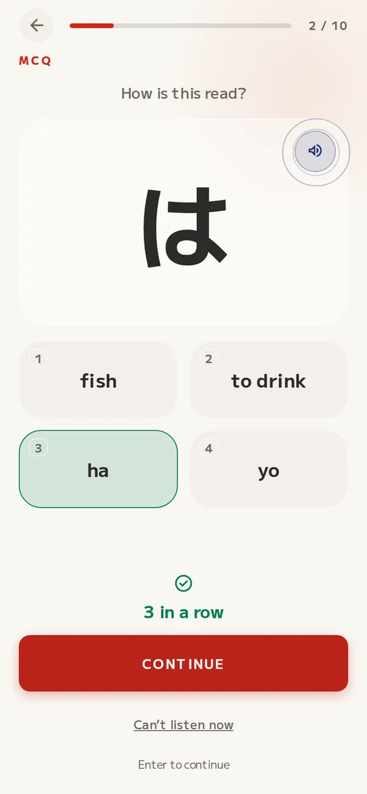
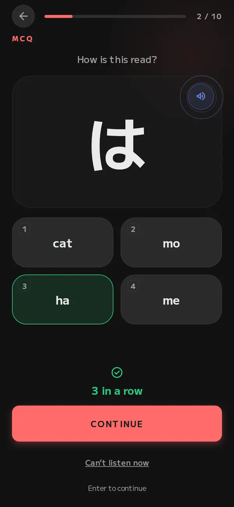
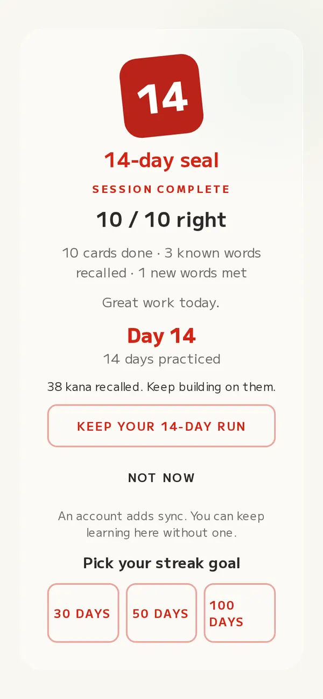
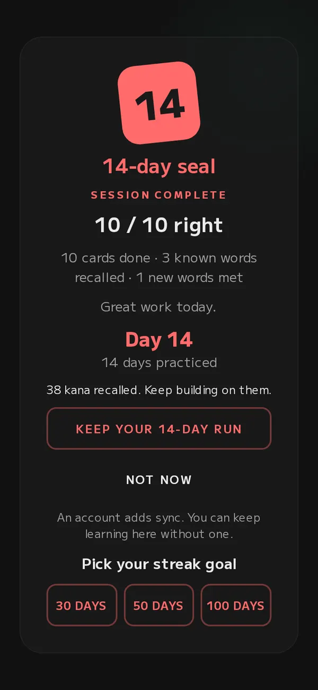
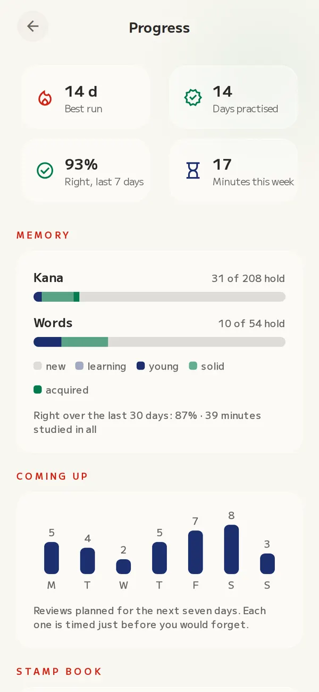
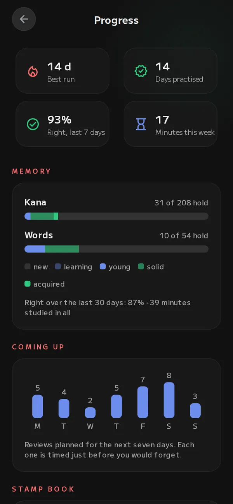
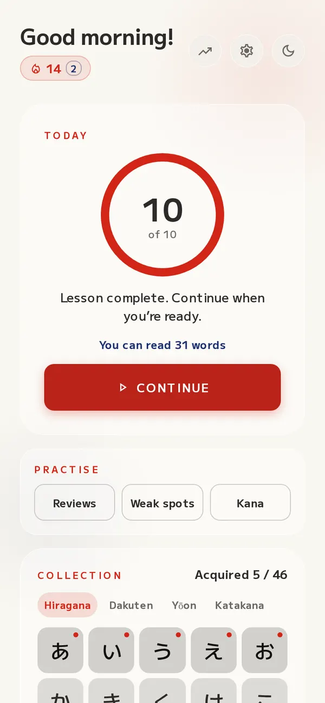
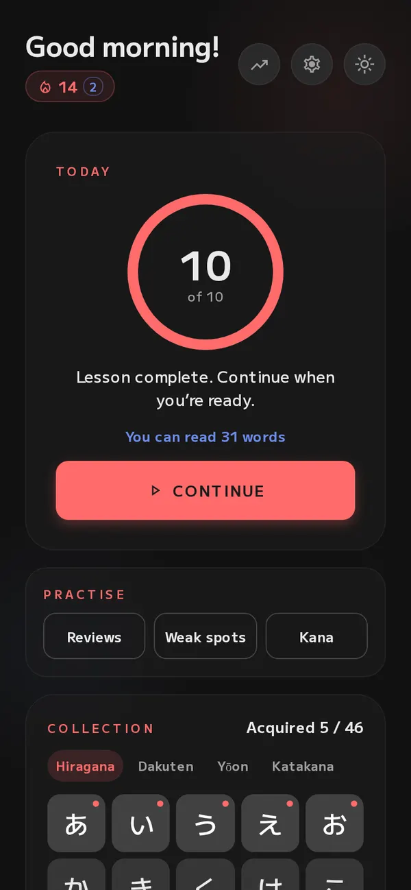
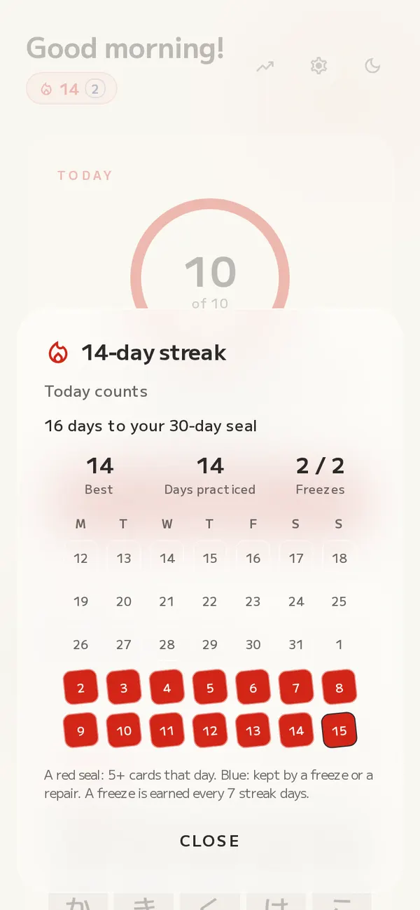
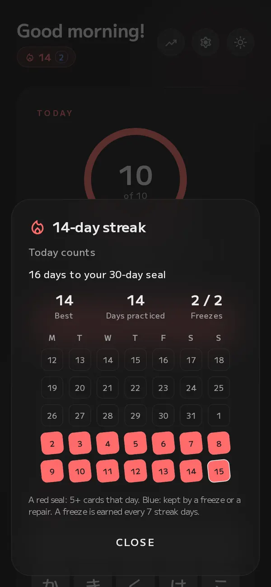

Forgetting is part of the plan
fudami brings each kana, word and kanji back on the day you are about to forget it, and makes that review a daily habit: a streak, a goal you set, progress you can see.
All of JLPT N5 is free, forever, with no ads.




An example learner, day 14.
Reviews timed for you
FSRS, an open scheduling algorithm, picks the day each kana and word comes back: the day you are about to forget it. Nothing to configure, and no pile of overdue cards.
The Progress screen shows what is coming this week and how much of what you learned now holds.






A habit you set
After your first lesson you choose a goal of 7, 14 or 30 days. Every practised day is a stamp in your book, a freeze covers a missed day, and you pick what to practise next: reviews, weak spots or kana.
Where fudami fits
Anki and Duolingo are both excellent at what they set out to do. Here is what is different, including where fudami is behind.
| Anki | Duolingo | fudami | |
|---|---|---|---|
| Scheduling | FSRS or SM-2, yours to configure | Its own practice system | FSRS, built in, nothing to configure |
| What you study | Decks you make or download | Duolingo's own course | A guided path from kana up, JLPT N5 today |
| Daily habit | Up to you | Streaks, goals, leagues | A streak with freezes, a goal you choose, no leagues |
| Start | Install, then pick a deck | App or browser, account to save | Browser, no account |
| Where it's behind | Steep learning curve | Lighter on long-term memory | Young: N5 only, web only for now |
Based on each product's public features in November 2026. See pricing and who builds fudami.
Look anything up in Jisho
Words, readings, kanji and handwriting search, on jisho.fudami.net. No account, no ads.
Questions
Is fudami free?
Yes. All of JLPT N5 is free, forever, with no ads. If paid features come later, the pricing page will say what they are and what they cost before you pay anything.
Do I need an account?
No. You can start as a guest: your progress is kept in this browser. Create an account when you want it to follow you to another device.
What can I learn today?
JLPT N5, starting from hiragana and katakana. The next levels are being built, N4 first. New to the words? The glossary explains kana, kanji and the JLPT in plain words.
Where is my progress kept?
As a guest, in this browser only. With an account, on our servers as well, so it follows you to another device. The privacy page lists everything we store and for how long.
Is there a phone app?
fudami runs in the browser on phones and computers today, and you can add it to your home screen. Native iOS and Android apps are planned: join the list to hear when they ship, or when N4 opens.
What is FSRS?
The Free Spaced Repetition Scheduler, an open algorithm that predicts when you are about to forget each item and schedules the review just before. More on FSRS.
Your first three sounds are waiting
One minute, no account. あ, い, う.